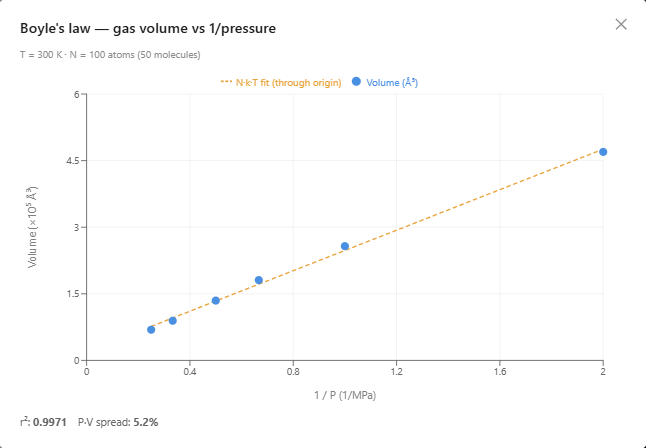
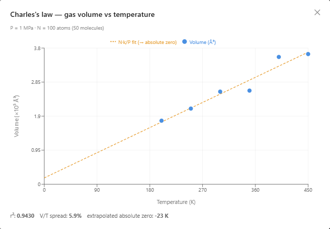

Discover the Gas Laws with AI-Assisted Simulations
Boyle, Charles, Gay-Lussac, and Avogadro in one box of molecules, run by an AI agent.
The gas laws are among the first quantitative relationships a chemistry student meets: compressing a gas reduces its volume, heating a gas makes it expand, and heating a sealed gas raises its pressure. They are usually presented as formulas to memorize or as a step-by-step laboratory exercise with a syringe and a hot-water bath. With AIMS, students discover these laws. They talk to an AI agent that builds and runs a molecular dynamics simulation for them: they ask a question in plain language, and the agent sizes a box of molecules, conducts the experiment, plots the measured data, and helps them interpret the results. The laws emerge from the motion of individual molecules and the forces between them. In the window below, a box of hydrogen molecules is capped by a movable piston. Press Play and watch the molecules move, collide with the walls, and hold up the piston against the load pressing down on it. Each atom is colored by its kinetic energy, red for fast and blue for slow, so students can watch energy pass from molecule to molecule as the molecules collide.
A Piston Driven by Molecular Collisions
Each gas law relates two of four quantities (pressure, volume, temperature, and amount) while the other two are held fixed. To study a gas law, the simulation must hold two quantities constant while a third is varied. AIMS holds the pressure constant with a movable-piston barostat: a weighted plate that seals the top of the container. A constant load pushes the plate down into the gas, while the gas molecules push it back up by colliding with it. When the two forces balance, the gas pressure equals the applied pressure. The result is a constant-pressure ensemble in which the pressure comes from molecular impacts, as described by the kinetic theory of gases. A red arrow on the plate shows the applied load and grows longer as the pressure is raised, so students can see the load increase before the plate reaches its new height.
Because the pressure is a load the molecules must hold up by striking the plate, and the volume is computed from the height of the piston, the simulation gives students a microscopic picture of what pressure and volume are. Students set up this apparatus by describing it in plain words. The AI agent sizes the container, places the gas, switches on the piston, sets its load, and runs the simulation.
Ask a Question, Run an Experiment
A student types an everyday question into the chat, such as "what happens to the volume if I squeeze the gas?", and the built-in AI agent recognizes the intent, steps the piston pressure through a series of values, waits for the gas to re-equilibrate at each value, measures the volume, and posts a live chart of the results in the conversation. The chart shows the data measured in that run.
You can build and run the whole investigation from scratch. Start a new Molecular Modeling project, open the chat, and type these prompts in order. The first group prepares the simulation: it sizes the container, adds the gas, sets the conditions, and switches on the piston. The second group runs the four experiments, and each returns a chart in the chat.
Prepare the simulation
- Size the container — "Resize the simulation box to 80 × 80 × 120 ångströms so the gas has room to expand and the piston can travel."
- Add the gas — "Add hydrogen to the gallery, then scatter 50 hydrogen molecules across the box."
- Set the conditions — "Hold the temperature at 300 K and use a 1 fs time step, since the H–H bond vibrates quickly."
- Switch on the piston — "Turn on the piston at 2 MPa with a light 20 amu plate so I can see it move."
- Run it — "Run the simulation for 10 picoseconds so I can watch the gas hold the piston up, then stop."
Investigate the four gas laws
- Boyle's law (volume vs. pressure) — "What happens to the volume if I squeeze the gas?"
- Charles's law (volume vs. temperature) — "What happens to the volume when I heat the gas?"
- Gay-Lussac's law (pressure vs. temperature) — "In a sealed, rigid container, what happens to the pressure as the gas gets hotter?"
- Avogadro's law (volume vs. amount) — "If I add more gas at the same temperature and pressure, what happens to the volume and the density?"
Each sweep reuses the piston and thermostat you set up (Gay-Lussac temporarily switches the piston off for its constant-volume run) and restores your simulation afterward, so you can keep exploring between experiments.
Each investigation is a sweep: a sequence of small experiments in which one control variable is stepped and one observable is measured. The results are collected in one interactive chart in the chat log, which keeps a record of what was measured in each run. Each of the four classic gas laws corresponds to one sweep.
The Four Gas Laws
Boyle's law (constant temperature). Holding the temperature fixed, the agent raises the piston pressure step by step and measures the shrinking volume. In the example, the 50 hydrogen molecules are held at 300 K while the pressure is stepped from 0.5 to 4 MPa. Plotted as volume against the reciprocal of pressure, the points lie on a straight line through the origin (r2 = 0.997), so the product P·V is nearly constant. Raising the pressure from 2 to 4 MPa reduces the volume from 135,000 to 69,000 å3. At much higher pressures, a dense gas departs from the ideal gas law.
Charles's law (constant pressure). With the piston holding the pressure fixed, the agent steps the temperature and measures the expanding volume. In the example, the piston holds 1 MPa while the temperature is stepped from 200 to 450 K, and the volume rises in proportion to the absolute temperature (r2 = 0.94). Extended to lower temperatures, the fitted line reaches zero volume at −23 K, which is 23 kelvin below absolute zero (0 K, or −273 °C). With 50 molecules, each point scatters by several percent, and the scatter moves the extrapolated temperature by tens of kelvin from one run to the next.
Gay-Lussac's law (constant volume). In this sweep the piston is switched off, and the container becomes a rigid, sealed box. The volume is constant, and the pressure is measured. It is computed from the molecules' motion and the forces between them. As the gas is heated, the pressure increases in direct proportion to the absolute temperature. The same relationship explains why a sealed can is dangerous in a fire. The fitted line extrapolates to zero pressure at absolute zero.
Avogadro's law (constant temperature and pressure). In this sweep the agent changes the amount of gas, the number of molecules, while holding temperature and pressure fixed, and measures the volume. The volume grows in direct proportion to the number of molecules, so the points fall on a straight line through the origin. The same sweep shows how the density depends on the amount of gas. Density is the mass divided by the volume, ρ = N·m / V. Because V is proportional to N, the ratio N / V, and therefore the density, stays constant. Adding more gas at the same temperature and pressure increases the volume of the sample and leaves its density unchanged.


Why Molecules Matter
In the ideal gas law, written P·V = nRT with n in moles, or P·V = NkT with N the number of molecules, the amount of gas is counted in molecules. Each molecule counts once, whatever its number of atoms. In a monatomic gas the atoms are the molecules, so the two counts are the same. In hydrogen the number of atoms is twice the number of molecules, and in larger molecules the ratio is higher. AIMS simulates hydrogen as bonded H2 molecules, so a box of 50 hydrogen molecules obeys the gas laws with N = 50.
A student can replace the hydrogen with nitrogen, oxygen, carbon dioxide, methane, water vapor, or a noble gas such as helium or argon by asking the agent in one sentence, and then rerun the same sweeps. Small, weakly interacting molecules are expected to follow the ideal gas law closely, and larger or more strongly attracting molecules to depart from it at lower pressures. Comparing the sweeps for different gases lets students measure where the ideal gas law holds.
Why Use AI to Assist Scientific Simulations?
The molecules in the simulation move according to Newton's laws and the forces between them. With the piston on, the pressure is the load that their impacts hold up. In a sealed box, the pressure is computed from their motion and forces. The volume comes from the height of the piston, and the temperature from the average kinetic energy of the atoms. A straight line on the chart is a result of these molecular motions. Students see the gas laws as emergent consequences of kinetic theory, and they can test the limits of the laws, such as the departure from ideal behavior at high pressure. Each of these experiments requires a barostat, a thermostat, a stepped pressure sweep, and an equilibrium average. The AI agent handles this setup for the student.
The investigation follows the questions the student asks. Because the AI agent matches each question to the right experiment, a student who wonders "does the pressure go up if I heat a sealed container?" or "does adding more gas change the density?" gets an experiment and a chart in reply. The chat log records each question and the run that answered it.
Conclusion
This article uses the gas laws to illustrate a new way to learn science: students converse with an AI agent that turns a plain-language question into a molecular dynamics experiment and hands back measured data. The four historical laws — Boyle, Charles, Gay-Lussac, and Avogadro — become patterns that students discover, measure, and explain from the motion of molecules. By pairing a physically grounded simulation with an AI that can set it up and run it, AIMS connects the microscopic and macroscopic pictures of matter and turns a student's curiosity into a genuine scientific investigation of how gases behave.
← Back to AIMS